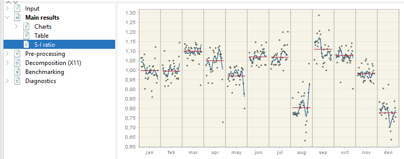
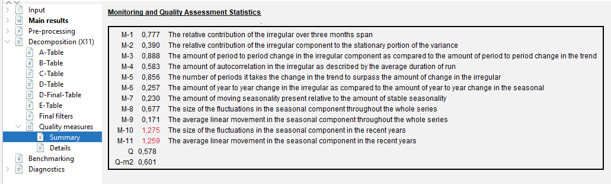
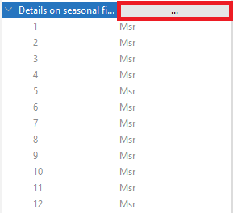
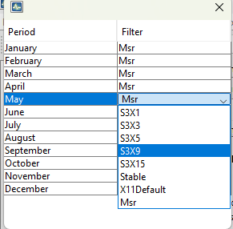

library("RJDemetra")
# the input series has to be a Time Series (TS) object
# specification RSA5c including pre-treatment
model_sa_v2 <- x13(raw_series, spec = "RSA5c")
# specification X11 without pre-treatment
model_sa_v2 <- x13(raw_series, spec = "X11")SA: X11 Decomposition
In this chapter
This chapter focuses on practical implementation of an X11 decomposition using the graphical user interface GUI and R using R packages in version 2.x and 3.x. More explanations on X11 algorithm can be found here.
In recent years X11 has been tailored in JDemetra+ to handle high-frequency (infra-monthly) data, which is described here with more methodological details here.
The sections below will describe
specifications needed to run X11
generated output
Context of use
X11 algorithm is generally the second (decomposition) step in a seasonal adjustment processing with X-13-Arima, once a pre-treatment phase has been performed. In this case X11 will decompose the linearized series using iteratively different moving averages. The effects of pre-treatment will be reallocated at the end the the relevant components. X11 can also be used without pre-treatment, choosing and will decompose the raw series.
Tools for X11 decomposition
| Algorithm | Access in GUI (v2 and v3) | Access in R (v2) | Access in R (v3) |
|---|---|---|---|
| X13-Arima | ✔️ | RJDemetra | rjd3x13 |
| X12plus | v3 only | ——- | rjd3x11plus |
| X11 decomposition only | ✔️ | RJDemetra | rjd3x13 |
Available frequencies in version 2 and version 3
| Version | GUI and R |
|---|---|
| v 2.x | \(p=12, 4, 2\) |
| v 3.x | \(p=12, 6, 4, 3, 2\) |
Default specifications
The default specifications for X11 must be chosen at the start of the SA processing, one of the options available there is to run a X11 decomposition without pre-treatment.
They are detailed in the chapter on pre-treatment.
Quick Launch
From GUI
With a workspace open, an SAProcessing created and an open data provider: (link to GUI general process)
choose a default specification
drop your data and press green arrow
In R
In version 2 using RJDemetra
Full documentation of ‘RJDemetra::x13’ function can be found here
The model_sa_v2 R object (list of lists) contains all parameters and results. Its structure is detailed here. It can be printed giving access to selected parameters, series and diagnostics.
print(model_sa_v2)In version 3 using rjd3x13
library("rjd3toolkit")
library("rjd3x13")
# the input series has to be a Time Series (TS) object
model_sa_v3 <- rjd3x13::x13(y_raw, spec = "RSA5")Full documentation of ‘rjd3x13::x13’ function can be found here and of ‘rjd3x13::X11’ here.
The model_sa_v3 R object (list of lists) contains all parameters and results. Its structure is detailed here.
It can be printed giving access to selected parameters, series and diagnostics.
print(model_sa_v3)Retrieve series
Display in GUI
Final components from the SA Processing are displayed in Main results. They contain the re-allocated pre-adjustment effects of outliers (link) or external regressors (link). The final seasonal components contains the calendar effects, if any.

(forecasts are added at the end of the series, values in italic)
Detailed results from decomposition are displayed in Decomposition (X11) node.

The final D Tables contain the re-allocated pre-adjustment effects.
(to be checked: v2 vs v3 on pre-treatment effects in D tables)
Output series can be exported out of GUI by two means:
generating output files directly with interactive menus
running the cruncher to generate those files as described here
Retrieve in R
In version 2
model_sa <- x13(raw_series, spec = "RSA3") # user's spec choice
# final components
model_sa$final$series
# final forecasts y_f sa_f s_f t_f i_f
model_sa$final$forecastsDetailed X11 tables have to be pre-specified from the user-defined output list.
# display the list of available objects (series, diagnostics, parameters)
user_defined_variables("X13-ARIMA")
# add selected object to estimation
sa_x13_v2 <- RJDemetra::x13(myseries, myspec,
userdefined = c("decomposition.c20", "decomposition.d1")
)
# retrieve in the user-defined sub-list
sa_x13_v2$user_definedto be modified In version 3
# final components
model_sa$final$series
# final forecasts y_f sa_f s_f t_f i_f
model_sa$final$forecasts
# from user defined outputDiagnostics
X11 produces the following type diagnostics or quality measures
SI-ratios
Display in GUI
NODE Main Results > SI-Ratios

For each period (month, quarter) the final value of the seasonal factors (without calendar factors, Table D10) is plotted (blue line). The dots represent \(S+I\) or \(S*I\) in the multiplicative case, where I= Table D8. The red straight line is the average of the factors over the decomposition (estimation) span.
In GUI all values cannot be retrieved.
Retrieve in R
All the values and the same plot as described above can be generated in R, the span can be customized.
(to be checked the average of the seasonal factors is not recalculated if span modified )
In version 2
# data frame with values
model_sa_v2$decomposition$si_ratio
# customizable plot
plot(mysa2$decomposition)
plot(model_sa, type = "cal-seas-irr", first_date = c(2015, 1))In version 3
# data frame with values
model_sa_v2$decomposition$si_ratio
# customizable plot
plot(mysa2$decomposition)
plot(model_sa, type = "cal-seas-irr", first_date = c(2015, 1))M-statistics
X11 algorithm provides quality measures of the decomposition called “M statistics” (detailed here
11 statistics (M1 to M11)
2 summary indicators (Q et Q-M2)
by design \(0<M_x<3\) and acceptance region is \(M_x \leq 1\)
Display in GUI
To display results in GUI, expand NODE
Decomposition(X11) > Quality Measures > Summary
Results displayed in red indicate that the test failed.

Retrieve in R
In version 2
# this code snippet is not self-sufficient
model_sa$decomposition$mstatsIn version 3
# this code snippet is not self-sufficient
model_sa$decomposition$mstatsDetailed Quality measures
In GUI all the diagnostics below can be displayed expanding the NODE
Decomposition(X11) > Quality Measures > Details
They are detailed in the X11 method chapter
In R (to be added): not directly available ?!
Retrieve final filters
The following parameters are automatically chosen by the software as a result of the estimation process. They have no default value but can be set by the user.
Final trend filter: length of Henderson filter applied for final trend estimation (in the second part of the D step).
Final seasonal filer: length of final seasonal filter for seasonal component estimation (in the second part of the D step).
Display in GUI
Node Decomposition(X11) > Final Filters

Retrieve in R
In version 2
library("RJDemetra")
model_sa_v2 <- x13(raw_seriesa, spec = "RSA5c")
model_sa$decomposition$s_filter
model_sa$decomposition$t_filterIn version 3
library("rjd3toolkit")
library("rjd3x13")
model_sa_v3 <- rjd3x13::x13(y_raw, spec = "RSA5")
model_sa_v3$result$decomposition$final_seasonal
model_sa_v3$result$decomposition$final_hendersonUser-defined parameters
The following parameters have default values, which will not be changed in the estimation process. They can be set by the user in a given range of admissible values.
General settings
- Mode
- Undefined: automatically chosen between Multiplicative and Additive Options available only if no pre-processing:
- Additive: $Y=T+S+I$, $SA =Y-S=T+I$
- Multiplicative $Y=T*S*I$, $SA =Y/S=T*I$
- LogAdditive $Log(Y) = T + S + I$, $SA=exp(T+I)=Y/exp(S)$
- PseudoAdditive $Y=T*(S+I-1)$, $SA=T*I$If X11 decomposition comes after a pre-processing, mode is set to undefined and will correspond to decomposition choice made in the pre-treatment: multiplicative if series log- transformed, additive otherwise.
- Seasonal component
Option available only if no pre-processing: - yes (default), decomposition into \(S\), \(T\), \(I\) - no, decomposition into \(S\), \(T\), \(I\)
- Forecasts horizon
Length of the forecasts generated by the Reg-Arima model - in months (positive values) - years (negative values) - if set to is set to 0, the X11 procedure does not use any model-based forecasts but the original X11 type forecasts for one year. - default value: -1, thus one year from the Arima model
- Backcasts horizon
Length of the backcasts generated by the Reg-Arima model - in months (positive values) - years (negative values) - default value: 0
Irregular correction
- LSigma
- sets lower sigma (standard deviation) limit used to down-weight the extreme irregular values in the internal seasonal adjustment iterations
- values in \([0,Usigma]\)
- default value is 1.5
- USigma
- sets upper sigma (standard deviation)
- values in \([Lsigma,+\infty]\)
- default value is 2.5
- Calendarsigma
Allows to set different LSigma and USigma for each period - None (default) - All: standard errors used for the extreme values detection and adjustment computed separately for each calendar month/quarter - Signif: groups determined by Cochran test (check) - Sigmavec: set two customized groups of periods
Excludeforecasts
- ticked: forecasts and backcasts from the Reg-Arima model not used in Irregular Correction
- unticked (default): forecasts and backcasts used
Seasonality extraction filters choice
- Seasonal filter
Specifies which filters will be used to estimate the seasonal factors for the entire series.
default value: MSR Moving seasonality ratio, automatic choice of final seasonal filter, initial filters are \(3\times 3\)
choices: \(3\times 1\), \(3\times 3\), \(3\times 5\), \(3\times 9\), \(3\times 15\) or Stable
“Stable”: constant factor for each calendar period (simple moving average of a all \(S+I\) values for each period)
User choices will be applied to final phase D step.
The seasonal filters can be selected for the entire series, or for a particular month or quarter.
- Details on seasonal filters
Sets different seasonal filters by period in order to account for seasonal heteroskedasticity
- default value: empty, same filter for all periods
Trend estimation filters
Automatic Henderson filter or user-defined
- default: length 13
- unticked: user-defined length choice
Henderson filter length choice
- values: odd number in \([3,101]\)
- default value: 13
Check: will user choice be applied to all steps or only to final phase D step
Parameter setting in GUI
All the parameters above can be set with in the specification box

Setting details on seasonal filters

Previously set values are displayed for each type of period, here they are all to default MSR choice.
Click on the right top button (show on image)
Another window appears in the top-left corner allowing to chose the filter period by period.

Parameter setting in R packages
In version 2 using RJDemetra
current_sa_model <- x13(raw_series, spec = current_spec)
# Creating a modified specification, customizing all available X11 parameters
modified_spec <- x13_spec(current_sa_model,
X11.mode = NA,
X11.seasonalComp = NA,
X11.fcasts = -2,
X11.bcasts = -1,
X11.lsigma = 1.2,
X11.usigma = 2.8,
X11.calendarSigma = NA,
X11.sigmaVector = NA,
X11.excludeFcasts = NA,
# filters
X11.trendAuto = NA,
X11.trendma = 23,
X11.seasonalma = "S3X9"
)
# New SA estimation: apply modified_spec
modified_sa_model <- x13(raw_series, modified_spec)In version 3 using rjd3x13
# Creating a modified specification, customizing all available X11 parameters
library("RJDemetra")
model_sa_v2 <- x13(raw_series, spec = "RSA5c")
# Creating a modified specification from the current estimation model
# Customizing all available X11 parameters
modified_spec <- x13_spec(model_sa_v2,
X11.fcasts = -2,
X11.bcasts = -1,
X11.lsigma = 1.2,
X11.usigma = 2.8,
X11.calendarSigma = NA,
X11.sigmaVector = NA,
X11.excludeFcasts = NA,
# filters
X11.trendAuto = NA,
X11.trendma = 23,
X11.seasonalma = "S3X9"
)
# New SA estimation: apply modified_spec
modified_sa_model <- x13(raw_series, modified_spec)
# For options available only in X11 mode
modified_spec <- x13_spec(model_sa_v2,
# X11.mode="?",
# X11.seasonalComp = "?",
X11.fcasts = -2
)Retrieving Parameters
How to see what parameters have actually been used.
In GUI: just open the specification box and navigate the options.
In R, print your model or navigate its elements.